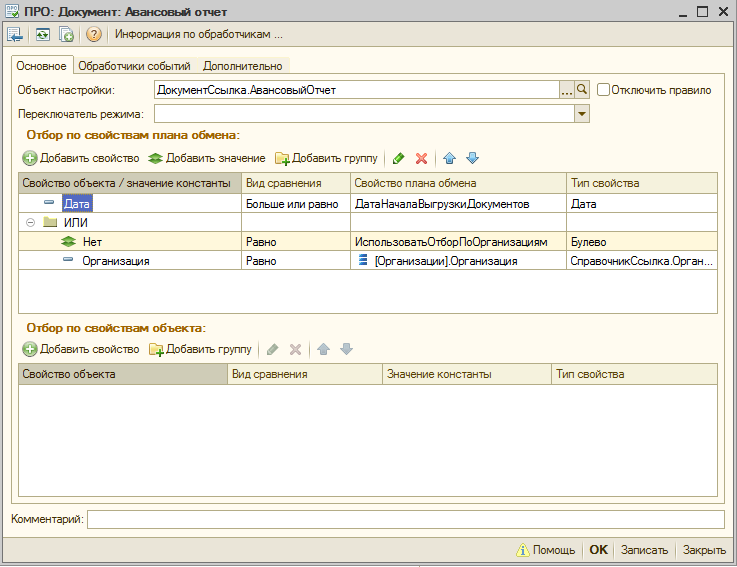

В процессе обмена данными в общем случае участвуют не все объекты информационной базы, а только некоторое подмножество - объекты, которые были изменены с момента последнего обмена данными. Это становится возможным благодаря работе службе регистрации изменений. Очень часто требуется поддержать такой сценарий работы обмена данными, при котором объекты мигрируют не по всем информационным базам, участвующим в обмене, а только по выбранным. Для этого следует выполнить настройку ограничения миграции данных.
Для декларативного описания ограничений миграции данных используются Правила регистрации объектов. В правилах регистрации объектов интерактивно задаются условия фильтрации данных на узлах планов обмена. Примером ограничений могут служить ограничения по организациям, складам и пр.
Правила регистрации создаются только для заданной конфигурации и одного плана обмена. Правила регистрации подразделяются на две категории:
В момент регистрации объекта эти правила выполняются последовательно, сначала выполняются ПРОБ, затем ПРОП. Если объект не проходит отбор, установленный ПРОБ, то ПРОП не выполняются и регистрация объекта к выгрузке не происходит.
ПРОБ описывают сопоставление реквизитов объекта с произвольными значениями.
ПРОП описывают сопоставление реквизитов плана обмена с реквизитами объекта и сопоставление реквизитов плана обмена со значениями констант примитивных типов*. По сути, эти правила и определяют множество узлов плана обмена, на котором будет выполнена регистрация объекта для выгрузки, или, говоря иначе, список информационных баз, в которые будет мигрировать объект.
Поддерживаются три способа настройки ограничения миграции данных или три типа элементов отбора:
Для настройки правил регистрации в качестве свойств плана обмена могут быть использованы реквизиты шапки и реквизиты табличных частей плана обмена. Для настройки правил регистрации в качестве свойств объекта могут быть использованы только реквизиты шапки объекта.
Для свойств плана обмена и свойств объекта поддерживается разыменование ссылочных полей, т.е. возможно получение вложенных свойств, например, ДокументОснование.Контрагент.ИНН.
В правилах регистрации элементы отбора объединены в группы. При этом все элементы внутри одной группы будут сопоставляться по условию И, либо по условию ИЛИ. Элементы отбора корневой группы сопоставляются по условию И.
В правилах регистрации может быть задано произвольное количество элементов отбора сгруппированных произвольным образом.

На рисунке представлено правило регистрации документа «Авансовый отчет». В правиле регистрации имеет место сопоставление свойств документа со свойствами плана обмена. Свойства шапки документа Дата и Организация сопоставляются со свойством шапки плана обмена ДатаНачалаВыгрузкиДокументов и свойством Организация табличной части Организации плана обмена. Документ будет зарегистрирован на узле плана обмена, только если дата документа больше или равна дате, указанной в узле, и организация документа входит в подмножество организаций, указанных в табличной части узла при установленном отборе по организациям в узле (ИспользоватьОтборПоОрганизациям = Истина). Если отбор по организациям в узле не установлен (ИспользоватьОтборПоОрганизациям = Ложь), то будет использовано только ограничение по дате документа.
На закладке «Отбор по свойствам плана обмена» настраиваются ПРОП, а на закладке «Отбор по свойствам объекта» настраиваются ПРОБ.
* В качестве примитивных типов используются следующие типы: Дата, Число, Строка, Булево.
Следующий раздел: «Правила регистрации объектов: Особенности использования»